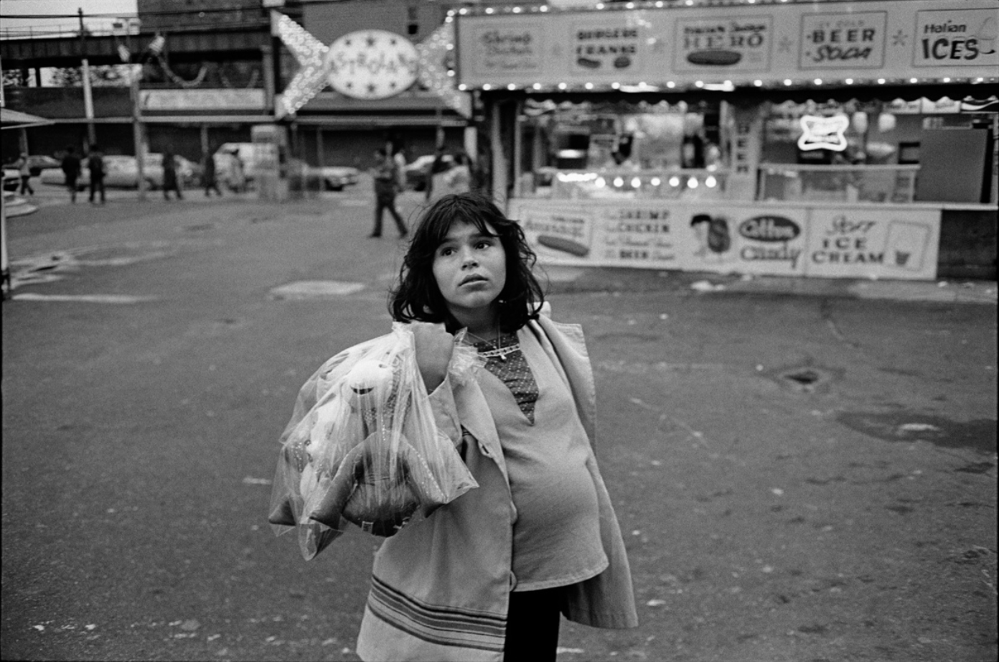
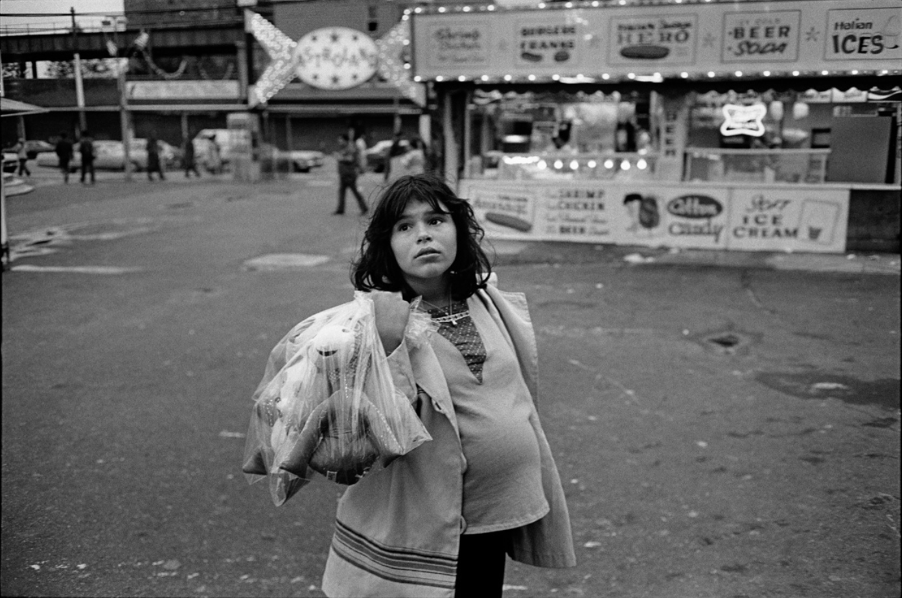
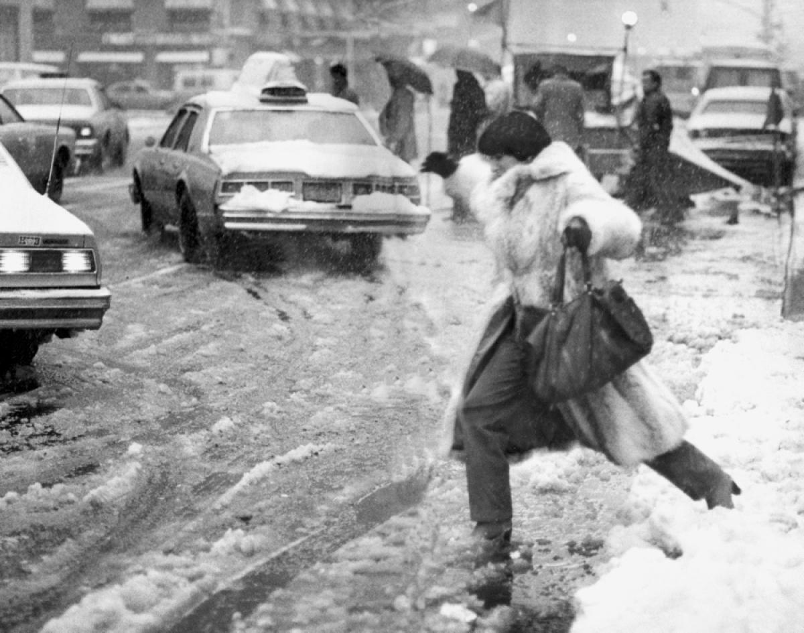
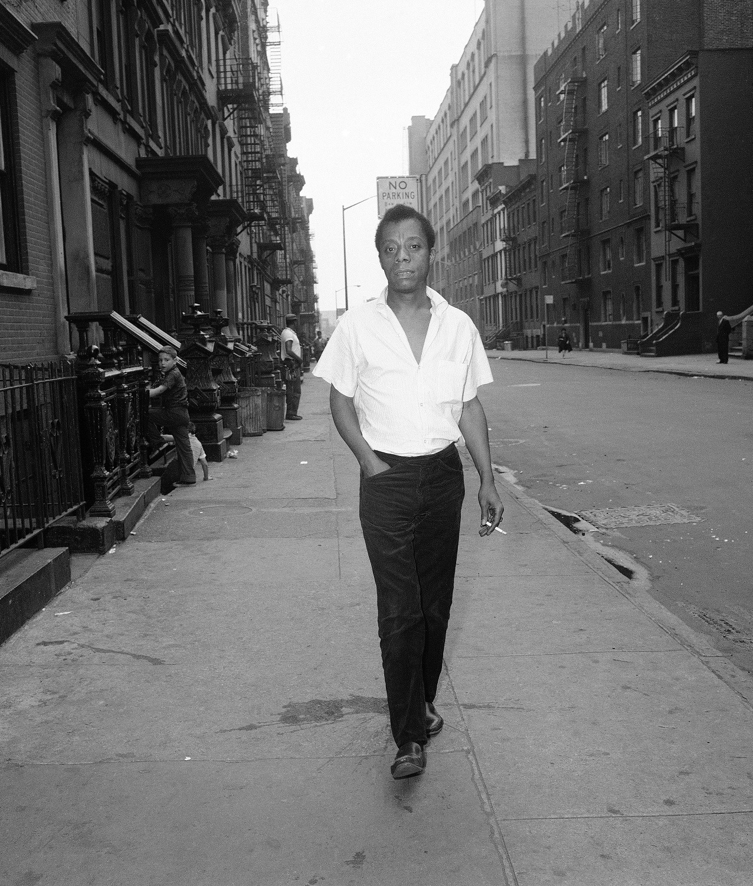
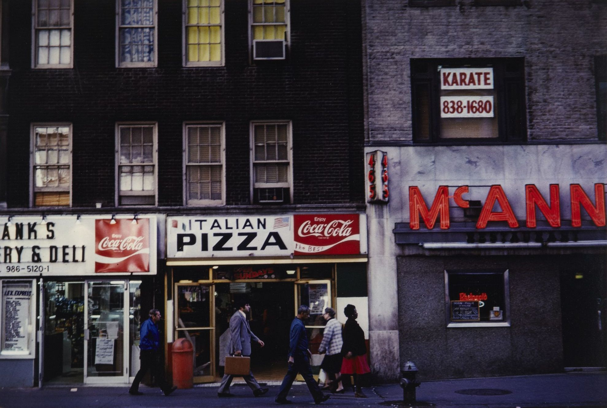
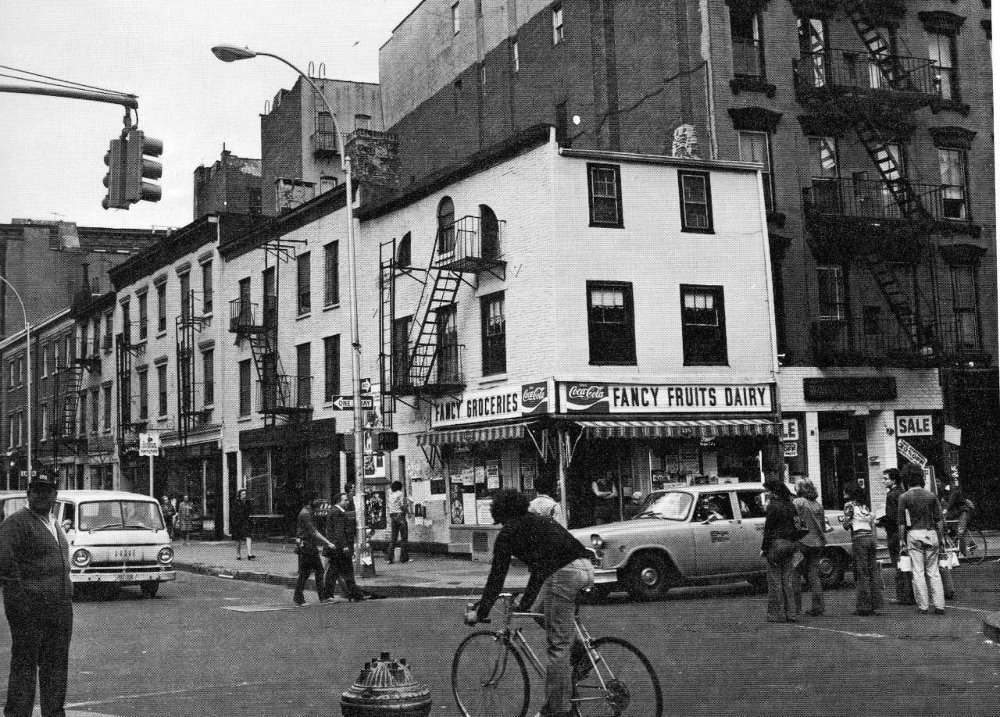

Mary Ellen Mark Jeanette at a Carnival, Brooklyn, New York 1978

Mary Ellen Mark Jeanette at a Carnival, Brooklyn, New York 1978
Central Park West near 67th St, looking uptown, 1984

Buses posing on 42nd and 1st, 1974
Lounging on the side of the West Side Highway, 1977
The F Train at Coney Island, 1972
Too cool for school, Greenwich Village, 1965
Gus’ Photo Studio, on Rivington Street, 1981
Bus and Colt 45 billboard, Westchester Ave and Southern Blvd, Bronx, 1972
Love stinks.
Louis Faurer, Woman on Train, NYC, 1973
SS train in the station
Sade, 1983
Everything is a garbage can. Times Square, 1979.
Pretzels, beer, and garbage. Union Square, 1975.
Sunnyside Garden Arena at 45th St. and Queens Blvd., 1971
Madison and 64th, 1979
They used to recruit ‘em young
The Guggenheim, 1978
West 52nd Street in 1978
Broadway and 47th, 1978. Jaws 2 playing across the street.
F. Murray Abraham on Broadway near 98th Street, 1970

Slushy, snowy mess, 1982



James Baldwin photographed by Dave Pickoff in Harlem, June 1963.
Ugliest pizza ever? Carmine Street, 1975.
Stickball in Greenwich Village, 1967

Eliot Porter. Lexington Avenue, New York, 1979.
Hudson Street, 1980
Soho, 1980s
Little Italy 1970’s

Bleecker and Christopher, 1975.
Lieutenant Wooferson